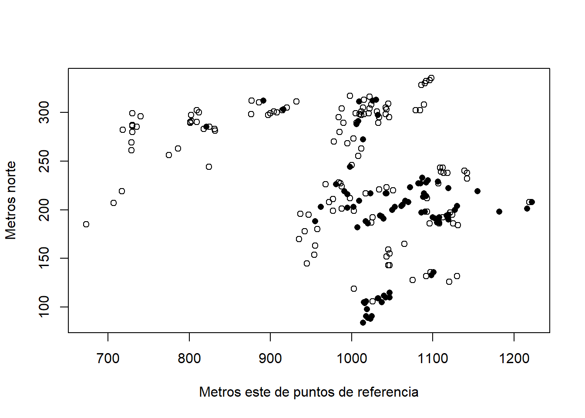
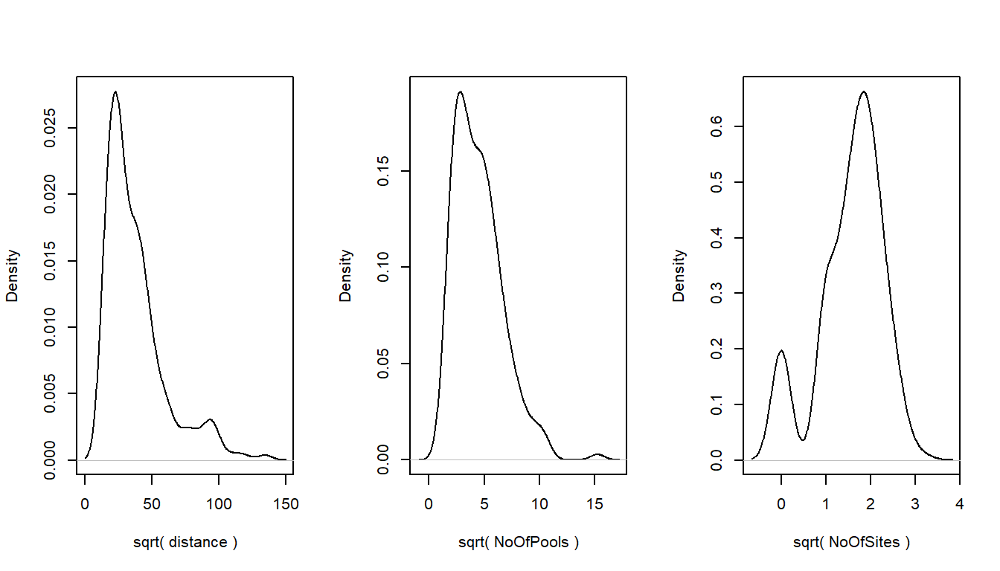
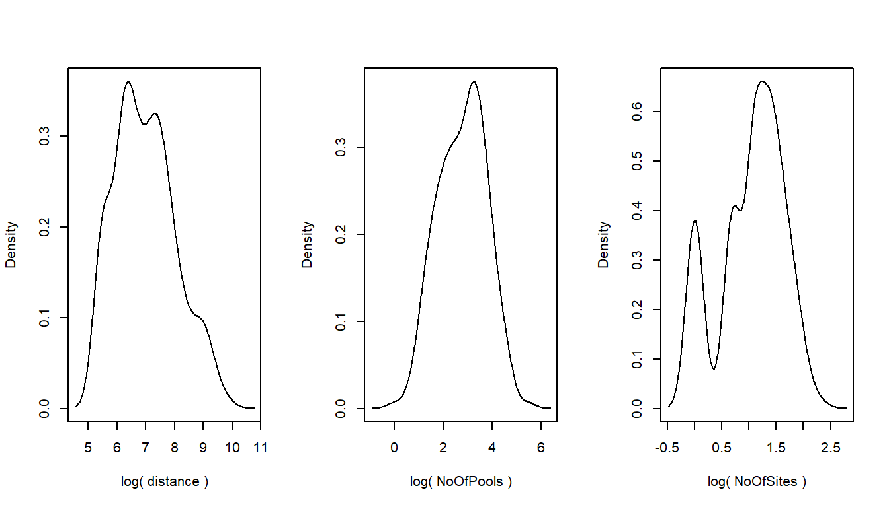
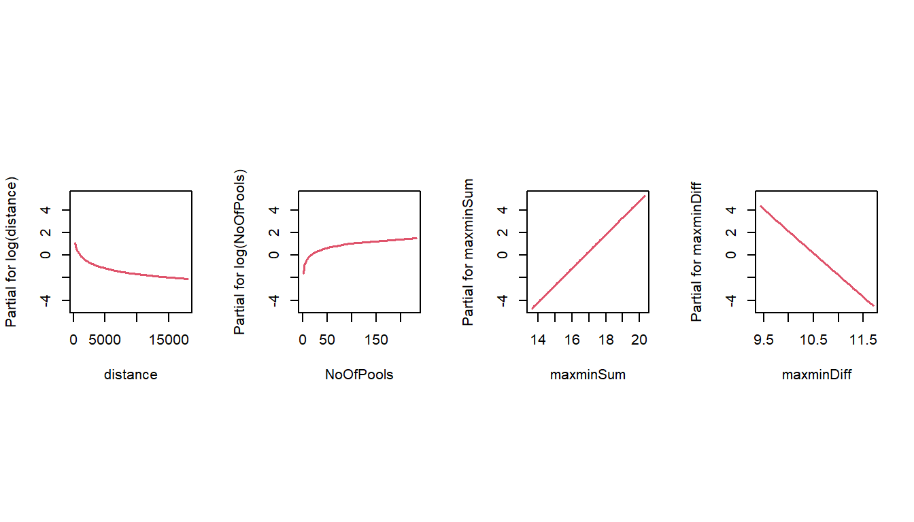
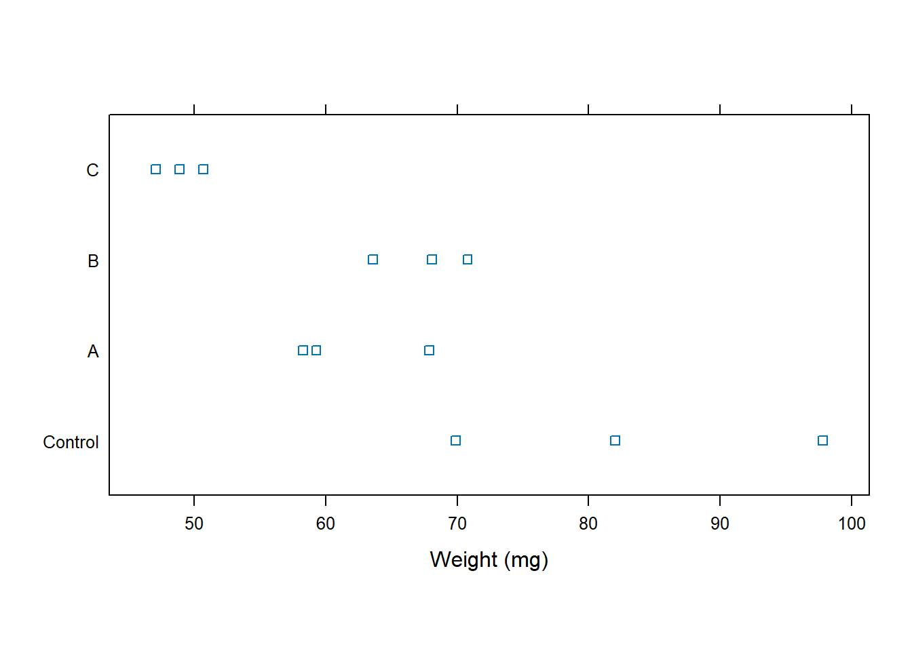
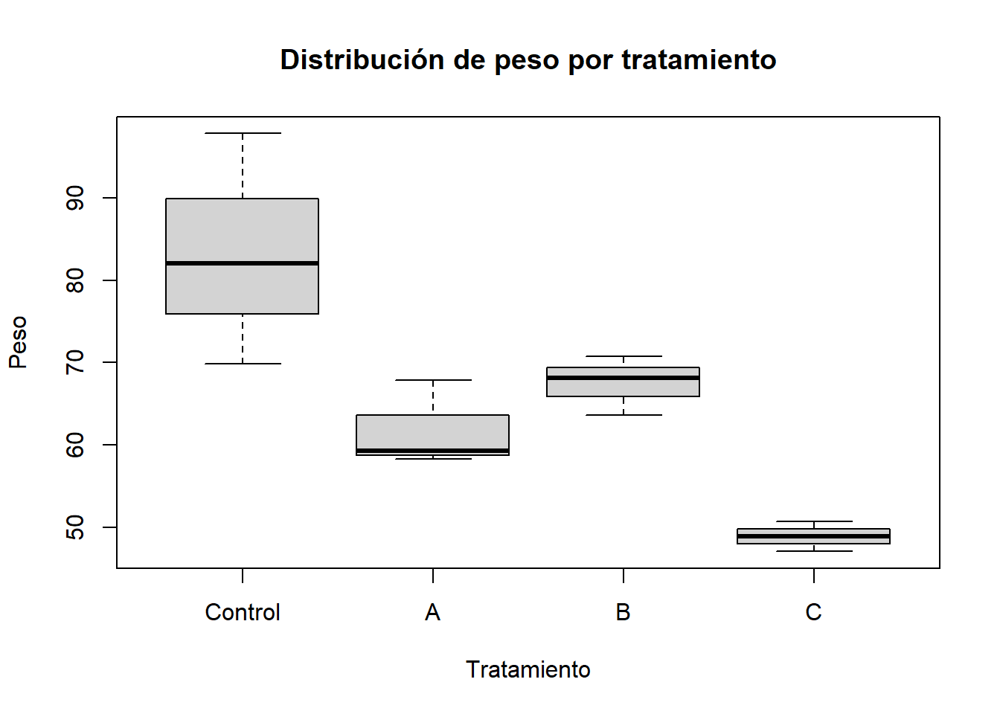
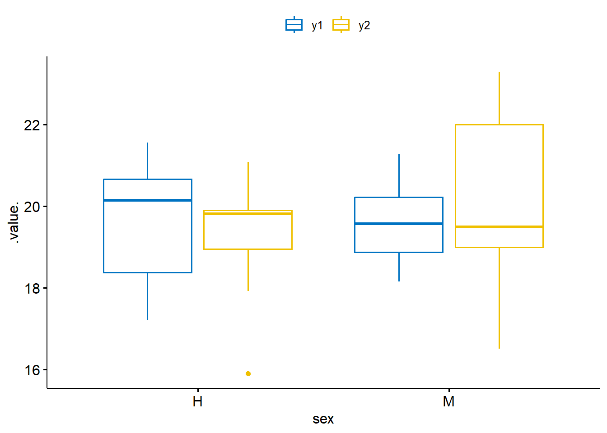
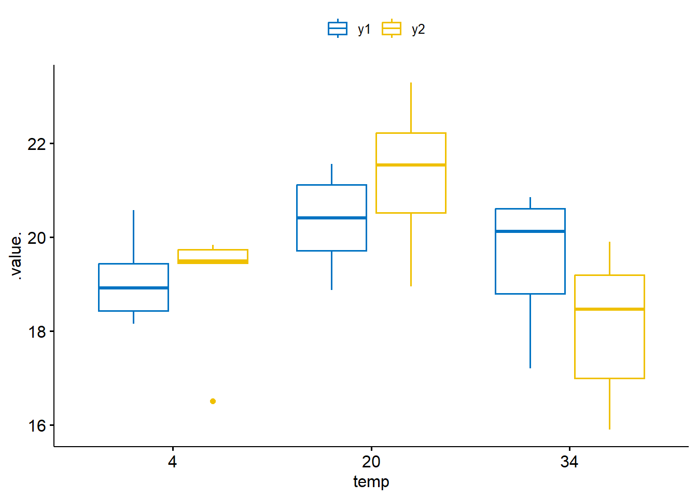

#install.packages(c(
# "openxlsx",
# "DAAG",
# "ROCR",
# "ROCit",
# "caret",
# "pROC",
# "plotROC",
# "lattice",
# "ggpubr",
# "MVN",
# "biotools",
# "car",
# "lsr",
# "ggplot2"
#))
library(openxlsx)
library(DAAG) # contiene datasets como frogs, sugar, appletaste, UCBAdmissions
library(ROCR) # curvas ROC y AUC
library(ROCit) # otra forma de construir ROC
library(caret) # matriz de confusión y métricas de clasificación
library(pROC) # ROC con intervalos de confianza
library(plotROC) # ROC con ggplot2
library(lattice) # gráficos tipo trellis (para sugar, appletaste)
library(ggpubr) # boxplots lindos para datos de ratas
library(MVN) # pruebas de normalidad multivariante
library(biotools) # Box's M
library(car) # Levene (homogeneidad de varianzas)
library(lsr) # etaSquared (tamaño de efecto)
library(ggplot2)Capitulo_5 _Logit_y_otros _analisis
1 1. Material descargable
Descargar PDF de contenidos teóricos
Descargar PDF de contenidos teóricos
El documento “Capitulo 5 Logit y otros analisis” desarrolla, entre otros, los siguientes puntos:
- Complementos a la regresión múltiple lineal.
- Modelo Logit:
- Formulación del modelo logístico para variables binarias.
- Función logit e inversa logística.
- Interpretación de los coeficientes como odds ratios (OR).
- Validación mediante matrices de confusión y partición de datos (train/test).
- Formulación del modelo logístico para variables binarias.
- Análisis de la Varianza (ANOVA):
- Factores y comparación de medias.
- Uso del test de Tukey para comparar pares de medias.
- Factores y comparación de medias.
- MANOVA:
- Análisis de varianza con múltiples variables respuesta.
- Supuestos de normalidad y homogeneidad de varianzas.
- Análisis de varianza con múltiples variables respuesta.
En este laboratorio llevamos esa teoría a la práctica con distintos ejemplos en R.
2 Configuración inicial en R
2.1 Carga de librerías
En este capítulo usamos varias librerías especializadas:
2.2 Ruta de trabajo (si la necesitas)
En este lab la mayoría de los datos vienen de paquetes de R, no de archivos externos.
Pero mantenemos la misma lógica de ruta de tu proyecto por consistencia:
ruta_datos <- "C:/Users/manue/Desktop/lab-econometria/labs_epg/data_epg"
# Puedes revisar qué archivos tienes ahí (opcional)
list.files(ruta_datos) [1] "annos_mantenimiento.xlsx" "auto_peso_consumo.xlsx"
[3] "costos.xlsx" "data_PCA_Decathlon.csv"
[5] "data_PCA_ExpertWine.csv" "Ejemplo1.xlsx"
[7] "Ejemplo2.xlsx" "millaje.txt"
[9] "orange.csv" "tabla_ejemplo_R.xlsx" 3 Parte 1: Modelo Logit con datos de ranas (frogs)
En este ejemplo trabajamos con el dataset frogs del paquete DAAG, que registra la presencia o ausencia de una especie de rana en distintos sitios de observación, junto con variables ambientales.
- Variable respuesta:
pres.abs(0 = ausencia, 1 = presencia).
- Variables explicativas:
distance,NoOfPools,NoOfSites,avrain,altitude,meanmin,meanmax, etc.
3.1 Exploración inicial de los datos
data(frogs) # carga el dataset desde DAAG
str(frogs)'data.frame': 212 obs. of 10 variables:
$ pres.abs : num 1 1 1 1 1 1 1 1 1 1 ...
$ northing : num 115 110 112 109 109 106 105 84 88 91 ...
$ easting : num 1047 1042 1040 1033 1032 ...
$ altitude : num 1500 1520 1540 1590 1590 1600 1600 1560 1560 1560 ...
$ distance : num 500 250 250 250 250 500 250 750 250 250 ...
$ NoOfPools: num 232 66 32 9 67 12 30 13 4 14 ...
$ NoOfSites: num 3 5 5 5 5 4 3 2 3 4 ...
$ avrain : num 155 158 160 165 165 ...
$ meanmin : num 3.57 3.47 3.4 3.2 3.2 ...
$ meanmax : num 14 13.8 13.6 13.2 13.2 ...head(frogs) pres.abs northing easting altitude distance NoOfPools NoOfSites avrain
2 1 115 1047 1500 500 232 3 155.0000
3 1 110 1042 1520 250 66 5 157.6667
4 1 112 1040 1540 250 32 5 159.6667
5 1 109 1033 1590 250 9 5 165.0000
6 1 109 1032 1590 250 67 5 165.0000
7 1 106 1018 1600 500 12 4 167.3333
meanmin meanmax
2 3.566667 14.00000
3 3.466667 13.80000
4 3.400000 13.60000
5 3.200000 13.16667
6 3.200000 13.16667
7 3.133333 13.066673.2 Mapa de puntos con presencia/ausencia
plot(
northing ~ easting,
data = frogs,
pch = c(1, 16)[frogs$pres.abs + 1],
xlab = "Metros este de puntos de referencia",
ylab = "Metros norte"
)
Nota
- Círculos y puntos sólidos representan sitios con ausencia/presencia.
- Esto ayuda a ver si hay patrones espaciales (por ejemplo, la especie se concentra en ciertas zonas).
3.3 Relación entre variables explicativas
pairs(frogs[, c(5:10, 4)],
oma = c(2, 2, 2, 2),
cex = 0.5)
Aquí exploramos cómo se relacionan entre sí variables ambientales como distance, NoOfPools, NoOfSites, avrain, altitude, meanmin, meanmax.
3.4 Densidades y posibles transformaciones
La idea es ver la distribución de algunas variables clave y pensar en transformaciones que las hagan más “amigables” para el modelo (por ejemplo, simétricas o menos sesgadas).
par(mfrow = c(1, 3))
for(nam in c("distance", "NoOfPools", "NoOfSites")){
y <- frogs[, nam]
plot(density(y), main = "", xlab = nam)
}
par(mfrow = c(1, 3))
for(nam in c("distance", "NoOfPools", "NoOfSites")){
y <- frogs[, nam]
plot(density(sqrt(y)), main = "", xlab = paste("sqrt(", nam, ")"))
}
par(mfrow = c(1, 3))
for(nam in c("distance", "NoOfPools", "NoOfSites")){
y <- frogs[, nam]
plot(density(log(y)), main = "", xlab = paste("log(", nam, ")"))
}
par(mfrow = c(1, 1))
Tip
En el PDF se comenta que para algunas variables conviene usar:
log(distance)
log(NoOfPools)
- Transformaciones sobre
NoOfSitesy combinaciones de temperaturas (meanmax + meanmin,meanmax - meanmin).
3.5 Correlaciones entre variables climáticas
with(frogs, cor(altitude, meanmax))[1] -0.996557with(frogs, cor(cbind(
altitude,
"meanmax+meanmin" = meanmin + meanmax,
"meanmax-meanmin" = meanmin - meanmax
))) altitude meanmax+meanmin meanmax-meanmin
altitude 1.0000000 -0.9933266 0.9094551
meanmax+meanmin -0.9933266 1.0000000 -0.8730120
meanmax-meanmin 0.9094551 -0.8730120 1.0000000Y un gráfico de pares con transformaciones:
with(frogs,
pairs(
cbind(
log(distance), log(NoOfPools), NoOfSites,
avrain, altitude, meanmax + meanmin, meanmax - meanmin
),
col = "gray",
labels = c("log(distance)", "log(NoOfPools)", "NoOfSites",
"Av. rainfall", "altitude",
"meanmax+meanmin", "meanmax-meanmin"),
panel = panel.smooth
)
)
3.6 Modelo logit: especificación y ajuste
Recordemos que un modelo logit asume:
\[ \Pr(\text{pres.abs} = 1 \mid X) = \frac{1}{1 + e^{-(X\beta)}}, \]
y que el logit de la probabilidad es lineal en las X:
\[ \log\left(\frac{p}{1-p}\right) = X\beta. \]
3.6.1 Modelo logit inicial (frogs.glm0)
frogs.glm0 <- glm(
pres.abs ~ log(distance) + log(NoOfPools) + NoOfSites +
avrain + I(meanmin + meanmax) + I(meanmin - meanmax),
family = binomial,
data = frogs
)
summary(frogs.glm0)
Call:
glm(formula = pres.abs ~ log(distance) + log(NoOfPools) + NoOfSites +
avrain + I(meanmin + meanmax) + I(meanmin - meanmax), family = binomial,
data = frogs)
Coefficients:
Estimate Std. Error z value Pr(>|z|)
(Intercept) 18.2688999 16.1381912 1.132 0.25762
log(distance) -0.7583198 0.2558117 -2.964 0.00303 **
log(NoOfPools) 0.5708953 0.2153335 2.651 0.00802 **
NoOfSites -0.0036201 0.1061469 -0.034 0.97279
avrain 0.0007003 0.0411710 0.017 0.98643
I(meanmin + meanmax) 1.4958055 0.3153152 4.744 2.1e-06 ***
I(meanmin - meanmax) 3.8582668 1.2783921 3.018 0.00254 **
---
Signif. codes: 0 '***' 0.001 '**' 0.01 '*' 0.05 '.' 0.1 ' ' 1
(Dispersion parameter for binomial family taken to be 1)
Null deviance: 279.99 on 211 degrees of freedom
Residual deviance: 197.65 on 205 degrees of freedom
AIC: 211.65
Number of Fisher Scoring iterations: 53.6.2 Modelo logit reducido (frogs.glm1)
Quitamos algunas variables para ver si un modelo más simple puede funcionar bien:
frogs.glm1 <- glm(
pres.abs ~ log(distance) + log(NoOfPools) +
I(meanmin + meanmax) + I(meanmin - meanmax),
family = binomial,
data = frogs
)
summary(frogs.glm1)
Call:
glm(formula = pres.abs ~ log(distance) + log(NoOfPools) + I(meanmin +
meanmax) + I(meanmin - meanmax), family = binomial, data = frogs)
Coefficients:
Estimate Std. Error z value Pr(>|z|)
(Intercept) 18.5268 5.2673 3.517 0.000436 ***
log(distance) -0.7547 0.2261 -3.338 0.000844 ***
log(NoOfPools) 0.5707 0.2152 2.652 0.007999 **
I(meanmin + meanmax) 1.4985 0.3088 4.853 1.22e-06 ***
I(meanmin - meanmax) 3.8806 0.9002 4.311 1.63e-05 ***
---
Signif. codes: 0 '***' 0.001 '**' 0.01 '*' 0.05 '.' 0.1 ' ' 1
(Dispersion parameter for binomial family taken to be 1)
Null deviance: 279.99 on 211 degrees of freedom
Residual deviance: 197.66 on 207 degrees of freedom
AIC: 207.66
Number of Fisher Scoring iterations: 5
Nota
- Signo del coeficiente: indica si la variable aumenta o reduce la probabilidad de presencia.
- Magnitud: se interpreta mejor usando la exponencial (odds ratios).
- p-value: indica si la variable aporta significativamente al modelo logit.
3.7 Tipos de predicción
# Probabilidades ajustadas
head(fitted(frogs.glm1)) 2 3 4 5 6 7
0.9416691 0.9259228 0.9029415 0.8119619 0.9314070 0.7278038 # Probabilidades con predict(type = "response")
head(predict(frogs.glm1, type = "response")) 2 3 4 5 6 7
0.9416691 0.9259228 0.9029415 0.8119619 0.9314070 0.7278038 # Escala lineal del predictor (logit)
head(predict(frogs.glm1, type = "link")) 2 3 4 5 6 7
2.7815212 2.5256832 2.2303441 1.4628085 2.6085055 0.9835086 # Valores ajustados en la escala lineal con errores estándar
pred_link <- predict(frogs.glm1, type = "link", se.fit = TRUE)
str(pred_link)List of 3
$ fit : Named num [1:212] 2.78 2.53 2.23 1.46 2.61 ...
..- attr(*, "names")= chr [1:212] "2" "3" "4" "5" ...
$ se.fit : Named num [1:212] 0.686 0.485 0.438 0.481 0.529 ...
..- attr(*, "names")= chr [1:212] "2" "3" "4" "5" ...
$ residual.scale: num 13.8 Aporte de cada variable: termplot
par(mfrow = c(1, 4), pty = "s")
frogs$maxminSum <- with(frogs, meanmax + meanmin)
frogs$maxminDiff <- with(frogs, meanmax - meanmin)
frogs.glm <- glm(
pres.abs ~ log(distance) + log(NoOfPools) +
maxminSum + maxminDiff,
family = binomial,
data = frogs
)
termplot(frogs.glm)
par(mfrow = c(1, 1))
Nota
Cada gráfico muestra cómo se relaciona la respuesta en escala logit con una variable, manteniendo las demás fijas. Es un análogo al “efecto parcial” de cada regresor.
3.9 Validación cruzada del modelo logit
CVbinary(frogs.glm0)
Fold: 9 10 5 2 4 6 8 7 3 1
Internal estimate of accuracy = 0.778
Cross-validation estimate of accuracy = 0.783CVbinary(frogs.glm)
Fold: 10 5 7 4 8 9 2 3 6 1
Internal estimate of accuracy = 0.778
Cross-validation estimate of accuracy = 0.783Estas funciones entregan estimaciones de error de clasificación usando validación cruzada, lo que ayuda a medir la capacidad predictiva del modelo.
3.10 Odds Ratios (OR) e intervalos de confianza
exp(coef(frogs.glm)) (Intercept) log(distance) log(NoOfPools) maxminSum maxminDiff
1.112001e+08 4.701711e-01 1.769536e+00 4.474929e+00 2.063873e-02 exp(cbind(OR = coef(frogs.glm),
confint(frogs.glm))) OR 2.5 % 97.5 %
(Intercept) 1.112001e+08 5.328174e+03 5.519123e+12
log(distance) 4.701711e-01 2.964833e-01 7.226771e-01
log(NoOfPools) 1.769536e+00 1.176801e+00 2.747499e+00
maxminSum 4.474929e+00 2.514265e+00 8.487274e+00
maxminDiff 2.063873e-02 3.247202e-03 1.122666e-01
Tip
- Un OR > 1 indica que una mayor X está asociada a mayor riesgo de presencia (o ser clasificado como 1).
- Un OR < 1 indica un efecto protector (menor probabilidad de presencia).
3.11 Matriz de confusión y precisión
Primero calculamos las probabilidades y luego definimos una regla de corte (threshold) para clasificar 0/1:
frogs$rankP <- predict(frogs.glm, newdata = frogs, type = "response")
plot(frogs$pres.abs, frogs$rankP,
xlab = "Presencia real (0/1)", ylab = "Probabilidad estimada")
fitted.results <- predict(frogs.glm, newdata = frogs, type = "response")
fitted.results <- ifelse(fitted.results > 0.399779, 1, 0)
misClasificError <- mean(fitted.results != frogs$pres.abs)
print(paste("Accuracy", 1 - misClasificError))[1] "Accuracy 0.787735849056604"matrizConfusion <- table(Real = frogs$pres.abs,
Predicho = fitted.results)
matrizConfusion Predicho
Real 0 1
0 104 29
1 16 63Usando caret::confusionMatrix:
CM_logit <- confusionMatrix(
as.factor(fitted.results),
as.factor(frogs$pres.abs)
)
CM_logitConfusion Matrix and Statistics
Reference
Prediction 0 1
0 104 16
1 29 63
Accuracy : 0.7877
95% CI : (0.7265, 0.8408)
No Information Rate : 0.6274
P-Value [Acc > NIR] : 3.685e-07
Kappa : 0.5607
Mcnemar's Test P-Value : 0.07364
Sensitivity : 0.7820
Specificity : 0.7975
Pos Pred Value : 0.8667
Neg Pred Value : 0.6848
Prevalence : 0.6274
Detection Rate : 0.4906
Detection Prevalence : 0.5660
Balanced Accuracy : 0.7897
'Positive' Class : 0
3.12 Curva ROC y AUC con ROCR
p <- predict(frogs.glm, newdata = frogs, type = "response")
pr <- prediction(p, frogs$pres.abs)
prf <- performance(pr, measure = "tpr", x.measure = "fpr")
plot(prf, main = "Curva ROC (ROCR)")
cutoffs <- data.frame(
cut = prf@alpha.values[[1]],
fpr = prf@x.values[[1]],
tpr = prf@y.values[[1]]
)
head(subset(cutoffs, fpr <= 0.2)) cut fpr tpr
1 Inf 0 0.00000000
2 0.9416691 0 0.01265823
3 0.9314070 0 0.02531646
4 0.9259228 0 0.03797468
5 0.9029415 0 0.05063291
6 0.8648604 0 0.06329114auc <- performance(pr, measure = "auc")
auc <- auc@y.values[[1]]
auc[1] 0.84990964 Parte 2: Modelo logit con tablas de contingencia y ANOVA univariado
En esta parte veremos tres ejemplos más cortos:
- Un modelo logit usando la tabla UCBAdmissions.
- Un ANOVA de un factor con el dataset sugar.
- Un ANOVA de dos factores con appletaste.
4.1 Caso UCBAdmissions (logit con categorías)
UCBAdmissions es una tabla 2x2x6 que contiene:
- Admisión (Admitted / Rejected)
- Género (Male / Female)
- Departamento (A–F)
UCBAdmissions, , Dept = A
Gender
Admit Male Female
Admitted 512 89
Rejected 313 19
, , Dept = B
Gender
Admit Male Female
Admitted 353 17
Rejected 207 8
, , Dept = C
Gender
Admit Male Female
Admitted 120 202
Rejected 205 391
, , Dept = D
Gender
Admit Male Female
Admitted 138 131
Rejected 279 244
, , Dept = E
Gender
Admit Male Female
Admitted 53 94
Rejected 138 299
, , Dept = F
Gender
Admit Male Female
Admitted 22 24
Rejected 351 317dimnames(UCBAdmissions)$Admit
[1] "Admitted" "Rejected"
$Gender
[1] "Male" "Female"
$Dept
[1] "A" "B" "C" "D" "E" "F"Construimos un data.frame con admitidos y rechazados:
UCB <- as.data.frame.table(UCBAdmissions["Admitted", , ])
names(UCB)[3] <- "admit"
UCB$reject <- as.data.frame.table(UCBAdmissions["Rejected", , ])$Freq
UCB$Gender <- relevel(UCB$Gender, ref = "Male")
UCB$total <- UCB$admit + UCB$reject
UCB$p <- UCB$admit / UCB$total
head(UCB) Gender Dept admit reject total p
1 Male A 512 313 825 0.6206061
2 Female A 89 19 108 0.8240741
3 Male B 353 207 560 0.6303571
4 Female B 17 8 25 0.6800000
5 Male C 120 205 325 0.3692308
6 Female C 202 391 593 0.34064084.1.1 Modelo logit con interacción Dept * Gender
UCB.glm <- glm(
p ~ Dept * Gender,
family = binomial,
data = UCB,
weights = total
)
anova(UCB.glm, test = "Chisq")Analysis of Deviance Table
Model: binomial, link: logit
Response: p
Terms added sequentially (first to last)
Df Deviance Resid. Df Resid. Dev Pr(>Chi)
NULL 11 877.06
Dept 5 855.32 6 21.74 < 2.2e-16 ***
Gender 1 1.53 5 20.20 0.215928
Dept:Gender 5 20.20 0 0.00 0.001144 **
---
Signif. codes: 0 '***' 0.001 '**' 0.01 '*' 0.05 '.' 0.1 ' ' 1summary(UCB.glm)
Call:
glm(formula = p ~ Dept * Gender, family = binomial, data = UCB,
weights = total)
Coefficients:
Estimate Std. Error z value Pr(>|z|)
(Intercept) 0.49212 0.07175 6.859 6.94e-12 ***
DeptB 0.04163 0.11319 0.368 0.71304
DeptC -1.02764 0.13550 -7.584 3.34e-14 ***
DeptD -1.19608 0.12641 -9.462 < 2e-16 ***
DeptE -1.44908 0.17681 -8.196 2.49e-16 ***
DeptF -3.26187 0.23120 -14.109 < 2e-16 ***
GenderFemale 1.05208 0.26271 4.005 6.21e-05 ***
DeptB:GenderFemale -0.83205 0.51039 -1.630 0.10306
DeptC:GenderFemale -1.17700 0.29956 -3.929 8.53e-05 ***
DeptD:GenderFemale -0.97009 0.30262 -3.206 0.00135 **
DeptE:GenderFemale -1.25226 0.33032 -3.791 0.00015 ***
DeptF:GenderFemale -0.86318 0.40267 -2.144 0.03206 *
---
Signif. codes: 0 '***' 0.001 '**' 0.01 '*' 0.05 '.' 0.1 ' ' 1
(Dispersion parameter for binomial family taken to be 1)
Null deviance: 8.7706e+02 on 11 degrees of freedom
Residual deviance: -3.4195e-14 on 0 degrees of freedom
AIC: 92.94
Number of Fisher Scoring iterations: 3summary(UCB.glm)$coef Estimate Std. Error z value Pr(>|z|)
(Intercept) 0.49212143 0.07174966 6.8588682 6.940825e-12
DeptB 0.04162783 0.11318919 0.3677721 7.130431e-01
DeptC -1.02763967 0.13549685 -7.5842331 3.344593e-14
DeptD -1.19607953 0.12640656 -9.4621632 3.016374e-21
DeptE -1.44908321 0.17681152 -8.1956378 2.492678e-16
DeptF -3.26186520 0.23119594 -14.1086615 3.358928e-45
GenderFemale 1.05207596 0.26270810 4.0047336 6.208742e-05
DeptB:GenderFemale -0.83205342 0.51039480 -1.6302153 1.030560e-01
DeptC:GenderFemale -1.17699758 0.29955796 -3.9291147 8.525915e-05
DeptD:GenderFemale -0.97008876 0.30261874 -3.2056467 1.347593e-03
DeptE:GenderFemale -1.25226298 0.33032201 -3.7910371 1.500195e-04
DeptF:GenderFemale -0.86318013 0.40266653 -2.1436600 3.206014e-02
Nota
- El modelo captura cómo la probabilidad de admisión cambia por departamento y género, incluyendo la interacción entre ambos.
- El resultado ilustra el clásico ejemplo de sesgo aparente por género y cómo la estructura por departamentos altera la interpretación (paradoja de Simpson).
4.2 ANOVA de un factor: dataset sugar
Este ejemplo se centra en un diseño de tratamientos (trt) y la variable respuesta weight (peso).
data(sugar)
head(sugar) weight trt
1 82.0 Control
2 97.8 Control
3 69.9 Control
4 58.3 A
5 67.9 A
6 59.3 Alibrary(lattice)
stripplot(trt ~ weight,
pch = 0,
xlab = "Weight (mg)",
data = sugar,
aspect = 0.5)
levels(sugar$trt)[1] "Control" "A" "B" "C" 4.2.1 Ajuste del modelo ANOVA
sugar.aov <- aov(weight ~ trt, data = sugar)
model.matrix(sugar.aov) (Intercept) trtA trtB trtC
1 1 0 0 0
2 1 0 0 0
3 1 0 0 0
4 1 1 0 0
5 1 1 0 0
6 1 1 0 0
7 1 0 1 0
8 1 0 1 0
9 1 0 1 0
10 1 0 0 1
11 1 0 0 1
12 1 0 0 1
attr(,"assign")
[1] 0 1 1 1
attr(,"contrasts")
attr(,"contrasts")$trt
[1] "contr.treatment"summary.lm(sugar.aov)
Call:
aov(formula = weight ~ trt, data = sugar)
Residuals:
Min 1Q Median 3Q Max
-13.3333 -2.7833 -0.6167 2.1750 14.5667
Coefficients:
Estimate Std. Error t value Pr(>|t|)
(Intercept) 83.233 4.473 18.609 7.17e-08 ***
trtA -21.400 6.325 -3.383 0.009597 **
trtB -15.733 6.325 -2.487 0.037680 *
trtC -34.333 6.325 -5.428 0.000625 ***
---
Signif. codes: 0 '***' 0.001 '**' 0.01 '*' 0.05 '.' 0.1 ' ' 1
Residual standard error: 7.747 on 8 degrees of freedom
Multiple R-squared: 0.7915, Adjusted R-squared: 0.7133
F-statistic: 10.12 on 3 and 8 DF, p-value: 0.004248
Nota
- El intercepto está asociado a una categoría base (por ejemplo, Control).
- Cada coeficiente representa la diferencia de cada tratamiento respecto al control.
- Probamos si hay diferencias significativas en el peso promedio entre tratamientos.
4.2.2 Medias y comparaciones múltiples (Tukey)
predict(sugar.aov) 1 2 3 4 5 6 7 8
83.23333 83.23333 83.23333 61.83333 61.83333 61.83333 67.50000 67.50000
9 10 11 12
67.50000 48.90000 48.90000 48.90000 sem <- summary.lm(sugar.aov)$sigma / sqrt(3) # 3 observaciones por grupo
boxplot(sugar$weight ~ sugar$trt,
xlab = "Tratamiento", ylab = "Peso",
main = "Distribución de peso por tratamiento")
TukeyHSD(sugar.aov, conf.level = 0.95) Tukey multiple comparisons of means
95% family-wise confidence level
Fit: aov(formula = weight ~ trt, data = sugar)
$trt
diff lwr upr p adj
A-Control -21.400000 -41.65627 -1.143735 0.0388013
B-Control -15.733333 -35.98960 4.522932 0.1368094
C-Control -34.333333 -54.58960 -14.077068 0.0027770
B-A 5.666667 -14.58960 25.922932 0.8074414
C-A -12.933333 -33.18960 7.322932 0.2491650
C-B -18.600000 -38.85627 1.656265 0.0723466plot(TukeyHSD(sugar.aov, conf.level = 0.95), las = 2)
4.3 ANOVA de dos factores: appletaste
Este dataset contiene evaluaciones de aftertaste (sabor residual) de distintos productos de manzana por distintos panelistas.
data(appletaste)
head(appletaste) aftertaste panelist product
1 89 a 937
2 98 a 298
3 108 a 493
4 13 b 937
5 55 b 298
6 104 b 493# Eliminamos un panelista en particular (k)
appletaste1 <- appletaste[appletaste$panelist != "k", ]
table(appletaste1$product, appletaste1$panelist)
a b c d e f g h i j k l m n o p q r s t
298 1 1 1 1 1 0 0 0 0 0 0 1 1 1 1 1 1 1 1 1
493 1 1 1 1 1 1 1 1 1 1 0 0 0 0 0 1 1 1 1 1
649 0 0 0 0 0 1 1 1 1 1 0 1 1 1 1 1 1 1 1 1
937 1 1 1 1 1 1 1 1 1 1 0 1 1 1 1 0 0 0 0 0sapply(appletaste1, is.factor)aftertaste panelist product
FALSE TRUE TRUE 4.3.1 ANOVA con panelista y producto
appletaste.aov <- aov(aftertaste ~ panelist + product,
data = appletaste1)
summary(appletaste.aov) Df Sum Sq Mean Sq F value Pr(>F)
panelist 18 25396 1411 1.913 0.0492 *
product 3 35073 11691 15.851 1.12e-06 ***
Residuals 35 25815 738
---
Signif. codes: 0 '***' 0.001 '**' 0.01 '*' 0.05 '.' 0.1 ' ' 1boxplot(appletaste1$aftertaste ~ appletaste1$product,
main = "Aftertaste por producto")
boxplot(appletaste1$aftertaste ~ appletaste1$panelist,
main = "Aftertaste por panelista")
TukeyHSD(appletaste.aov, conf.level = 0.95) Tukey multiple comparisons of means
95% family-wise confidence level
Fit: aov(formula = aftertaste ~ panelist + product, data = appletaste1)
$panelist
diff lwr upr p adj
b-a -41.0000000 -125.08231 43.082307 0.9239145
c-a 5.0000000 -79.08231 89.082307 1.0000000
d-a -25.0000000 -109.08231 59.082307 0.9995641
e-a -26.3333333 -110.41564 57.748974 0.9991587
f-a -34.6666667 -118.74897 49.415641 0.9822057
g-a -60.3333333 -144.41564 23.748974 0.4246450
h-a -43.0000000 -127.08231 41.082307 0.8920491
i-a -12.0000000 -96.08231 72.082307 1.0000000
j-a -7.0000000 -91.08231 77.082307 1.0000000
l-a -59.3333333 -143.41564 24.748974 0.4530346
m-a -30.6666667 -114.74897 53.415641 0.9949812
n-a -40.0000000 -124.08231 44.082307 0.9372358
o-a -61.3333333 -145.41564 22.748974 0.3970457
p-a -32.3333333 -116.41564 51.748974 0.9911582
q-a -47.6666667 -131.74897 36.415641 0.7913417
r-a -30.3333333 -114.41564 53.748974 0.9955513
s-a -45.0000000 -129.08231 39.082307 0.8532101
t-a -77.3333333 -161.41564 6.748974 0.1012762
c-b 46.0000000 -38.08231 130.082307 0.8312840
d-b 16.0000000 -68.08231 100.082307 0.9999993
e-b 14.6666667 -69.41564 98.748974 0.9999998
f-b 6.3333333 -77.74897 90.415641 1.0000000
g-b -19.3333333 -103.41564 64.748974 0.9999875
h-b -2.0000000 -86.08231 82.082307 1.0000000
i-b 29.0000000 -55.08231 113.082307 0.9973249
j-b 34.0000000 -50.08231 118.082307 0.9852771
l-b -18.3333333 -102.41564 65.748974 0.9999943
m-b 10.3333333 -73.74897 94.415641 1.0000000
n-b 1.0000000 -83.08231 85.082307 1.0000000
o-b -20.3333333 -104.41564 63.748974 0.9999740
p-b 8.6666667 -75.41564 92.748974 1.0000000
q-b -6.6666667 -90.74897 77.415641 1.0000000
r-b 10.6666667 -73.41564 94.748974 1.0000000
s-b -4.0000000 -88.08231 80.082307 1.0000000
t-b -36.3333333 -120.41564 47.748974 0.9723614
d-c -30.0000000 -114.08231 54.082307 0.9960668
e-c -31.3333333 -115.41564 52.748974 0.9936600
f-c -39.6666667 -123.74897 44.415641 0.9412994
g-c -65.3333333 -149.41564 18.748974 0.2963345
h-c -48.0000000 -132.08231 36.082307 0.7828845
i-c -17.0000000 -101.08231 67.082307 0.9999982
j-c -12.0000000 -96.08231 72.082307 1.0000000
l-c -64.3333333 -148.41564 19.748974 0.3199219
m-c -35.6666667 -119.74897 48.415641 0.9766966
n-c -45.0000000 -129.08231 39.082307 0.8532101
o-c -66.3333333 -150.41564 17.748974 0.2738830
p-c -37.3333333 -121.41564 46.748974 0.9647639
q-c -52.6666667 -136.74897 31.415641 0.6522222
r-c -35.3333333 -119.41564 48.748974 0.9786603
s-c -50.0000000 -134.08231 34.082307 0.7293259
t-c -82.3333333 -166.41564 1.748974 0.0603829
e-d -1.3333333 -85.41564 82.748974 1.0000000
f-d -9.6666667 -93.74897 74.415641 1.0000000
g-d -35.3333333 -119.41564 48.748974 0.9786603
h-d -18.0000000 -102.08231 66.082307 0.9999957
i-d 13.0000000 -71.08231 97.082307 1.0000000
j-d 18.0000000 -66.08231 102.082307 0.9999957
l-d -34.3333333 -118.41564 49.748974 0.9837980
m-d -5.6666667 -89.74897 78.415641 1.0000000
n-d -15.0000000 -99.08231 69.082307 0.9999997
o-d -36.3333333 -120.41564 47.748974 0.9723614
p-d -7.3333333 -91.41564 76.748974 1.0000000
q-d -22.6666667 -106.74897 61.415641 0.9998811
r-d -5.3333333 -89.41564 78.748974 1.0000000
s-d -20.0000000 -104.08231 64.082307 0.9999796
t-d -52.3333333 -136.41564 31.748974 0.6621111
f-e -8.3333333 -92.41564 75.748974 1.0000000
g-e -34.0000000 -118.08231 50.082307 0.9852771
h-e -16.6666667 -100.74897 67.415641 0.9999987
i-e 14.3333333 -69.74897 98.415641 0.9999999
j-e 19.3333333 -64.74897 103.415641 0.9999875
l-e -33.0000000 -117.08231 51.082307 0.9890877
m-e -4.3333333 -88.41564 79.748974 1.0000000
n-e -13.6666667 -97.74897 70.415641 0.9999999
o-e -35.0000000 -119.08231 49.082307 0.9804949
p-e -6.0000000 -90.08231 78.082307 1.0000000
q-e -21.3333333 -105.41564 62.748974 0.9999487
r-e -4.0000000 -88.08231 80.082307 1.0000000
s-e -18.6666667 -102.74897 65.415641 0.9999926
t-e -51.0000000 -135.08231 33.082307 0.7010209
g-f -25.6666667 -109.74897 58.415641 0.9993900
h-f -8.3333333 -92.41564 75.748974 1.0000000
i-f 22.6666667 -61.41564 106.748974 0.9998811
j-f 27.6666667 -56.41564 111.748974 0.9984622
l-f -24.6666667 -108.74897 59.415641 0.9996335
m-f 4.0000000 -80.08231 88.082307 1.0000000
n-f -5.3333333 -89.41564 78.748974 1.0000000
o-f -26.6666667 -110.74897 57.415641 0.9990169
p-f 2.3333333 -81.74897 86.415641 1.0000000
q-f -13.0000000 -97.08231 71.082307 1.0000000
r-f 4.3333333 -79.74897 88.415641 1.0000000
s-f -10.3333333 -94.41564 73.748974 1.0000000
t-f -42.6666667 -126.74897 41.415641 0.8978483
h-g 17.3333333 -66.74897 101.415641 0.9999976
i-g 48.3333333 -35.74897 132.415641 0.7742833
j-g 53.3333333 -30.74897 137.415641 0.6323007
l-g 1.0000000 -83.08231 85.082307 1.0000000
m-g 29.6666667 -54.41564 113.748974 0.9965317
n-g 20.3333333 -63.74897 104.415641 0.9999740
o-g -1.0000000 -85.08231 83.082307 1.0000000
p-g 28.0000000 -56.08231 112.082307 0.9982261
q-g 12.6666667 -71.41564 96.748974 1.0000000
r-g 30.0000000 -54.08231 114.082307 0.9960668
s-g 15.3333333 -68.74897 99.415641 0.9999996
t-g -17.0000000 -101.08231 67.082307 0.9999982
i-h 31.0000000 -53.08231 115.082307 0.9943522
j-h 36.0000000 -48.08231 120.082307 0.9745987
l-h -16.3333333 -100.41564 67.748974 0.9999990
m-h 12.3333333 -71.74897 96.415641 1.0000000
n-h 3.0000000 -81.08231 87.082307 1.0000000
o-h -18.3333333 -102.41564 65.748974 0.9999943
p-h 10.6666667 -73.41564 94.748974 1.0000000
q-h -4.6666667 -88.74897 79.415641 1.0000000
r-h 12.6666667 -71.41564 96.748974 1.0000000
s-h -2.0000000 -86.08231 82.082307 1.0000000
t-h -34.3333333 -118.41564 49.748974 0.9837980
j-i 5.0000000 -79.08231 89.082307 1.0000000
l-i -47.3333333 -131.41564 36.748974 0.7996494
m-i -18.6666667 -102.74897 65.415641 0.9999926
n-i -28.0000000 -112.08231 56.082307 0.9982261
o-i -49.3333333 -133.41564 34.748974 0.7476743
p-i -20.3333333 -104.41564 63.748974 0.9999740
q-i -35.6666667 -119.74897 48.415641 0.9766966
r-i -18.3333333 -102.41564 65.748974 0.9999943
s-i -33.0000000 -117.08231 51.082307 0.9890877
t-i -65.3333333 -149.41564 18.748974 0.2963345
l-j -52.3333333 -136.41564 31.748974 0.6621111
m-j -23.6666667 -107.74897 60.415641 0.9997873
n-j -33.0000000 -117.08231 51.082307 0.9890877
o-j -54.3333333 -138.41564 29.748974 0.6021671
p-j -25.3333333 -109.41564 58.748974 0.9994834
q-j -40.6666667 -124.74897 43.415641 0.9285454
r-j -23.3333333 -107.41564 60.748974 0.9998240
s-j -38.0000000 -122.08231 46.082307 0.9589140
t-j -70.3333333 -154.41564 13.748974 0.1957341
m-l 28.6666667 -55.41564 112.748974 0.9976605
n-l 19.3333333 -64.74897 103.415641 0.9999875
o-l -2.0000000 -86.08231 82.082307 1.0000000
p-l 27.0000000 -57.08231 111.082307 0.9988552
q-l 11.6666667 -72.41564 95.748974 1.0000000
r-l 29.0000000 -55.08231 113.082307 0.9973249
s-l 14.3333333 -69.74897 98.415641 0.9999999
t-l -18.0000000 -102.08231 66.082307 0.9999957
n-m -9.3333333 -93.41564 74.748974 1.0000000
o-m -30.6666667 -114.74897 53.415641 0.9949812
p-m -1.6666667 -85.74897 82.415641 1.0000000
q-m -17.0000000 -101.08231 67.082307 0.9999982
r-m 0.3333333 -83.74897 84.415641 1.0000000
s-m -14.3333333 -98.41564 69.748974 0.9999999
t-m -46.6666667 -130.74897 37.415641 0.8157955
o-n -21.3333333 -105.41564 62.748974 0.9999487
p-n 7.6666667 -76.41564 91.748974 1.0000000
q-n -7.6666667 -91.74897 76.415641 1.0000000
r-n 9.6666667 -74.41564 93.748974 1.0000000
s-n -5.0000000 -89.08231 79.082307 1.0000000
t-n -37.3333333 -121.41564 46.748974 0.9647639
p-o 29.0000000 -55.08231 113.082307 0.9973249
q-o 13.6666667 -70.41564 97.748974 0.9999999
r-o 31.0000000 -53.08231 115.082307 0.9943522
s-o 16.3333333 -67.74897 100.415641 0.9999990
t-o -16.0000000 -100.08231 68.082307 0.9999993
q-p -15.3333333 -99.41564 68.748974 0.9999996
r-p 2.0000000 -82.08231 86.082307 1.0000000
s-p -12.6666667 -96.74897 71.415641 1.0000000
t-p -45.0000000 -129.08231 39.082307 0.8532101
r-q 17.3333333 -66.74897 101.415641 0.9999976
s-q 2.6666667 -81.41564 86.748974 1.0000000
t-q -29.6666667 -113.74897 54.415641 0.9965317
s-r -14.6666667 -98.74897 69.415641 0.9999998
t-r -47.0000000 -131.08231 37.082307 0.8078023
t-s -32.3333333 -116.41564 51.748974 0.9911582
$product
diff lwr upr p adj
493-298 17.84286 -9.37496 45.060674 0.3054791
649-298 -12.52381 -40.20692 15.159303 0.6185367
937-298 -46.04762 -73.73073 -18.364507 0.0004190
649-493 -30.36667 -57.58448 -3.148850 0.0238482
937-493 -63.89048 -91.10829 -36.672659 0.0000017
937-649 -33.52381 -61.20692 -5.840697 0.0124799
Nota
- El ANOVA permite separar el efecto del producto del efecto del panelista.
- En la práctica, nos interesa si el producto tiene un efecto significativo en la evaluación, más allá de la variabilidad entre panelistas.
5 Parte 3: MANOVA y análisis multivariante con datos de ratas
En este último ejemplo se trabaja con datos simulados de ratas con:
y1: peso inicial.
y2: peso final.
y3: peso del tumor.
- Factores:
temp(temperatura ambiental) ysex(sexo).
5.1 Generar el dataset
pesos <- c(
18.15, 16.51, 0.24, 19.15, 19.49, 0.16, 18.68,
19.50, 0.32, 18.35, 19.81, 0.17, 19.54, 19.84,
0.20, 20.58, 19.44, 0.22, 21.27, 23.30, 0.33,
18.87, 22.00, 0.25, 19.57, 22.30, 0.45, 20.66,
21.08, 0.20, 20.15, 18.95, 0.35, 21.56, 20.34,
0.20, 20.74, 16.69, 0.31, 20.22, 19.00, 0.18,
20.02, 19.26, 0.41, 18.38, 17.92, 0.30, 17.20,
15.90, 0.28, 20.85, 19.90, 0.17
)
y1 <- pesos[c(TRUE, FALSE, FALSE)]
y2 <- pesos[c(FALSE, TRUE, FALSE)]
y3 <- pesos[c(FALSE, FALSE, TRUE)]
temp <- factor(c(rep(4, 6), rep(20, 6), rep(34, 6)))
sex <- factor(rep(c(rep("M", 3), rep("H", 3)), 3))
ratas <- data.frame(y1, y2, y3, temp, sex)
head(ratas) y1 y2 y3 temp sex
1 18.15 16.51 0.24 4 M
2 19.15 19.49 0.16 4 M
3 18.68 19.50 0.32 4 M
4 18.35 19.81 0.17 4 H
5 19.54 19.84 0.20 4 H
6 20.58 19.44 0.22 4 H5.2 Boxplots exploratorios
ggboxplot(ratas, x = "sex", y = c("y1", "y2"),
merge = TRUE, palette = "jco")
ggboxplot(ratas, x = "temp", y = c("y1", "y2"),
merge = TRUE, palette = "jco")
5.3 Estadísticos agrupados (media, n, sd)
aggregate(ratas[, 1:3], list(sex = ratas$sex, temp = ratas$temp), mean) sex temp y1 y2 y3
1 H 4 19.49000 19.69667 0.1966667
2 M 4 18.66000 18.50000 0.2400000
3 H 20 20.79000 20.12333 0.2500000
4 M 20 19.90333 22.53333 0.3433333
5 H 34 18.81000 17.90667 0.2500000
6 M 34 20.32667 18.31667 0.3000000aggregate(ratas[, 1:3], list(sex = ratas$sex, temp = ratas$temp), length) sex temp y1 y2 y3
1 H 4 3 3 3
2 M 4 3 3 3
3 H 20 3 3 3
4 M 20 3 3 3
5 H 34 3 3 3
6 M 34 3 3 3aggregate(ratas[, 1:3], list(sex = ratas$sex, temp = ratas$temp), sd) sex temp y1 y2 y3
1 H 4 1.1158405 0.2227854 0.02516611
2 M 4 0.5002999 1.7233978 0.08000000
3 H 20 0.7139328 1.0814034 0.08660254
4 M 20 1.2342339 0.6806859 0.10066446
5 H 34 1.8626057 2.0000333 0.07000000
6 M 34 0.3716629 1.4147202 0.115325635.4 Normalidad univariada por grupo
Definimos una función que calcula el p-value del test de Shapiro–Wilk:
normal <- function(vec){
shapiro.test(vec)$p.value
}
aggregate(ratas[, 1:3], list(sex = ratas$sex, temp = ratas$temp), normal) sex temp y1 y2 y3
1 H 4 0.9258674 0.128686974 0.7804408
2 M 4 0.9338670 0.005540978 1.0000000
3 H 20 0.6975632 0.666926507 0.0000000
4 M 20 0.5491264 0.424350926 0.7804408
5 H 34 0.6155710 0.988973545 0.2737737
6 M 34 0.5202800 0.175746733 0.8564460
Nota
- P-values grandes sugieren que no podemos rechazar normalidad para esa combinación de grupo y variable.
- Esto es un requisito para aplicar ANOVA/MANOVA de forma estricta.
5.5 Modelos MANOVA
Planteamos distintos modelos multivariantes:
mod1 <- manova(cbind(y1, y2, y3) ~ sex + temp, data = ratas)
summary(mod1) Df Pillai approx F num Df den Df Pr(>F)
sex 1 0.21483 1.0945 3 12 0.38905
temp 2 0.80234 2.9030 6 26 0.02656 *
Residuals 14
---
Signif. codes: 0 '***' 0.001 '**' 0.01 '*' 0.05 '.' 0.1 ' ' 1mod1.1 <- manova(cbind(y1, y2, y3) ~ temp, data = ratas)
summary(mod1.1) Df Pillai approx F num Df den Df Pr(>F)
temp 2 0.76682 2.9018 6 28 0.02503 *
Residuals 15
---
Signif. codes: 0 '***' 0.001 '**' 0.01 '*' 0.05 '.' 0.1 ' ' 1mod2 <- manova(cbind(y1, y2, y3) ~ sex * temp, data = ratas)
summary(mod2) Df Pillai approx F num Df den Df Pr(>F)
sex 1 0.27510 1.2650 3 10 0.33838
temp 2 0.97019 3.4544 6 22 0.01475 *
sex:temp 2 0.75271 2.2128 6 22 0.08041 .
Residuals 12
---
Signif. codes: 0 '***' 0.001 '**' 0.01 '*' 0.05 '.' 0.1 ' ' 1
Nota
- MANOVA evalúa si los factores (sexo, temperatura, e interacción) tienen efectos conjuntos sobre el vector \((y1, y2, y3)\).
- Si hay significancia, se justifica mirar luego análisis univariados para cada variable por separado.
5.6 ANOVA univariados asociados
m1 <- aov(y1 ~ temp, data = ratas)
m2 <- aov(y2 ~ temp, data = ratas)
m3 <- aov(y3 ~ temp, data = ratas)
m4 <- aov(y1 ~ temp * sex, data = ratas)
m5 <- aov(y2 ~ temp * sex, data = ratas)
m6 <- aov(y3 ~ temp * sex, data = ratas)
summary(m1) Df Sum Sq Mean Sq F value Pr(>F)
temp 2 4.933 2.466 1.856 0.19
Residuals 15 19.935 1.329 summary(m2) Df Sum Sq Mean Sq F value Pr(>F)
temp 2 32.59 16.293 7.538 0.00542 **
Residuals 15 32.42 2.161
---
Signif. codes: 0 '***' 0.001 '**' 0.01 '*' 0.05 '.' 0.1 ' ' 1summary(m3) Df Sum Sq Mean Sq F value Pr(>F)
temp 2 0.01963 0.009817 1.398 0.278
Residuals 15 0.10537 0.007024 summary(m4) Df Sum Sq Mean Sq F value Pr(>F)
temp 2 4.933 2.466 2.074 0.168
sex 1 0.020 0.020 0.017 0.899
temp:sex 2 5.643 2.821 2.372 0.135
Residuals 12 14.272 1.189 summary(m5) Df Sum Sq Mean Sq F value Pr(>F)
temp 2 32.59 16.293 9.176 0.00382 **
sex 1 1.32 1.318 0.742 0.40590
temp:sex 2 9.79 4.897 2.758 0.10339
Residuals 12 21.31 1.776
---
Signif. codes: 0 '***' 0.001 '**' 0.01 '*' 0.05 '.' 0.1 ' ' 1summary(m6) Df Sum Sq Mean Sq F value Pr(>F)
temp 2 0.01963 0.009817 1.374 0.290
sex 1 0.01742 0.017422 2.439 0.144
temp:sex 2 0.00221 0.001106 0.155 0.858
Residuals 12 0.08573 0.007144 5.6.1 Tamaño de efecto (eta cuadrado)
etaSquared(m2) eta.sq eta.sq.part
temp 0.5012788 0.5012788etaSquared(m5) eta.sq eta.sq.part
temp 0.50127879 0.60463503
sex 0.02026862 0.05823481
temp:sex 0.15067126 0.31491368
Nota
Regla de interpretación de eta² (aproximada):
- 0.01 → efecto pequeño.
- 0.06 → efecto mediano.
0.14 → efecto grande.
Esto ayuda a complementar la significancia estadística con una medida de magnitud del efecto.
5.6.2 Comparaciones múltiples (Tukey) para una de las ANOVA
post <- TukeyHSD(m2)
post Tukey multiple comparisons of means
95% family-wise confidence level
Fit: aov(formula = y2 ~ temp, data = ratas)
$temp
diff lwr upr p adj
20-4 2.2300000 0.02527797 4.434722 0.0472590
34-4 -0.9866667 -3.19138869 1.218055 0.4924782
34-20 -3.2166667 -5.42138869 -1.011945 0.0047632plot(post)
6 Cierre del laboratorio
En este capítulo trabajaste con:
Modelos logit en contexto espacial (
frogs) y con tablas de contingencia (UCBAdmissions), aprendiendo a:- Interpretar coeficientes en términos de odds ratios.
- Evaluar desempeño mediante ROC, AUC, matrices de confusión y accuracy.
- Interpretar coeficientes en términos de odds ratios.
ANOVA para comparar medias entre tratamientos (
sugar) y para diseños con dos factores (appletaste).MANOVA y análisis multivariante (
ratas), incluyendo:- Comprobación de supuestos (normalidad, homogeneidad de varianzas).
- Interpretación de efectos conjuntos e individuales.
- Tamaño de efecto mediante eta².
- Comprobación de supuestos (normalidad, homogeneidad de varianzas).
Estos procedimientos son la base para muchos análisis empíricos modernos en economía, negocios, salud y ciencias sociales, más allá del modelo de regresión lineal clásico.